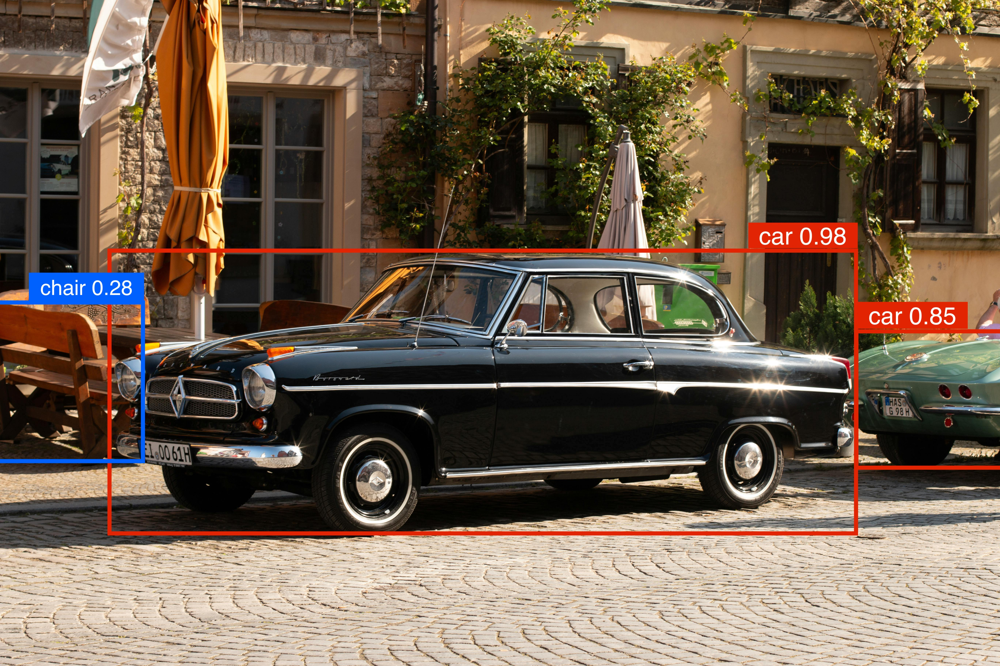

In this blog, we will learn about YOLOv10 models and how to train one on a custom dataset to develop a real-time object detection web application using Django.

Machine learning, a subset of artificial intelligence, has revolutionized data handling and prediction making. Among its various applications, computer vision is particularly noteworthy, allowing machines to interpret and comprehend visual data similarly to humans.
The influence of computer vision is profound, revolutionizing healthcare, advancing automation, and bolstering security measures. Real-time object detection enables accurate identification of object categories and positions in images with minimal delay. The YOLO series has led the charge in this area, striking a perfect balance between performance and efficiency.
YOLOv10 Overivew
YOLO stands for You Only Look Once. It’s a family of models designed for real-time object detection. From image pixels to bounding box coordinates, the main idea behind YOLO is to frame object detection as a single regression task.
A few months ago, researchers at Tsinghua University unveiled YOLOv10, a novel approach to real-time object detection. This new model addresses the post-processing and architectural shortcomings of previous YOLO versions. By eliminating non-maximum suppression (NMS), YOLOv10 achieves state-of-the-art performance with significantly reduced computational overhead.
Model Variants
YOLOv10 comes in various model scales to address different application needs:
YOLOv10-N: Nano version for extremely resource-constrained environments.
YOLOv10-S: Small version balancing speed and accuracy.
YOLOv10-M: Medium version for general-purpose use.
YOLOv10-B: Balanced version with increased width for higher accuracy.
YOLOv10-L: Large version for higher accuracy at the cost of increased computational resources.
YOLOv10-X: Extra-large version for maximum accuracy and performance.
Architecture Design
The YOLOv10 architecture builds upon the strengths of previous YOLO models while introducing key innovations for even better performance.
The components of the architecture shown in Figure 2 above are as follows:
Input Image:
- The model takes an image as input. This image is usually resized to a fixed size (e.g., 640x640 pixels).
Backbone:
This is a convolutional neural network (CNN) that extracts features from the input image. The backbone is often a modified version of a well-known CNN like CSPDarknet or a more efficient variant.
The backbone consists of several convolutional layers that help detect edges, textures, patterns, and more complex structures.
Neck:
The neck connects the backbone to the head of the model. It consists of additional layers that further process the features extracted by the backbone.
YOLOv10 uses techniques like PANet (Path Aggregation Network) to improve feature fusion from different layers, enhancing the detection capability for objects at different scales.
Head:
The head is responsible for predicting bounding boxes and class probabilities.
One-to-Many Head: Generates multiple predictions per object during training to provide rich supervisory signals and improve learning accuracy.
One-to-One Head: Generates a single best prediction per object during inference to eliminate the need for NMS, thereby reducing latency and improving efficiency.
YOLOv10 uses anchor boxes to predict the location and size of objects. Anchor boxes are predefined boxes of different shapes and sizes that help the model generalize better to various object shapes.
The head outputs three types of information for each anchor box: the coordinates of the bounding box, the objectness score (how likely it is that an object is present), and the class probabilities (what kind of object it is).
Output:
The model outputs a grid of predictions, where each cell in the grid predicts multiple bounding boxes and their corresponding class probabilities.
Non-Maximum Suppression (NMS) is used to filter out overlapping boxes, keeping only the best ones to avoid duplicate detections.
Key Features
- No NMS Training: Uses a new method to avoid non-maximum suppression (NMS), speeding up the inference (prediction) process.
- Complete Model Design: Optimizes different parts of the model for better speed and accuracy, including lighter classification heads and improved downsampling techniques.
- Improved Model Features: Adds larger convolutions and self-attention techniques to boost performance without adding much extra computing power.
Performance Comparison
YOLOv10 models, including YOLOv10-S and YOLOv10-X, offer significant speed advantages, being 1.8× and 1.3× faster than RT-DETR-R18 and R101 while maintaining comparable accuracy. Additionally, YOLOv10-B has 25% fewer parameters and 46% lower latency than YOLOv9-C, achieving the same level of accuracy. Furthermore, YOLOv10-L and YOLOv10-X exceed the performance of YOLOv8-L and YOLOv8-X by 0.3 AP and 0.5 AP, respectively, while requiring 1.8× and 2.3× fewer parameters. Overall, YOLOv10 demonstrates a compelling balance of efficiency and performance compared to other state-of-the-art detectors.
Custom Model

Now, let’s dive into the exciting part—implementation!
For our web application’s implementation, we will start by creating our custom model. For this first part, we will use Google Colab. Make sure to set the runtime to T4 GPU in the Runtime section. Once we have our new set of weights, we can download them and move on to Visual Studio Code to set up our Django environment. Let’s begin!
Install Ultralytics packages
Before we start coding, we need to install the YOLOv10 package directly from the GitHub repository. We will also need to install Roboflow to access our dataset.
Download Pre-trained Model Weights
In this part, we are creating a new repository in our Colab environment called weights. This repository will store all the pre-trained model weights for all YOLOv10 models.
import os
import urllib.request
# create a directory for weights in the current working directory
weights_dir = os.path.join(os.getcwd(), 'weights')
os.makedirs(weights_dir, exist_ok=True)
# URLs of the weight files
urls = [
'https://github.com/THU-MIG/yolov10/releases/download/v1.1/yolov10n.pt',
'https://github.com/THU-MIG/yolov10/releases/download/v1.1/yolov10s.pt',
'https://github.com/THU-MIG/yolov10/releases/download/v1.1/yolov10m.pt',
'https://github.com/THU-MIG/yolov10/releases/download/v1.1/yolov10b.pt',
'https://github.com/THU-MIG/yolov10/releases/download/v1.1/yolov10x.pt',
'https://github.com/THU-MIG/yolov10/releases/download/v1.1/yolov10l.pt'
]
# download files
for url in urls:
file_name = os.path.join(weights_dir, os.path.basename(url))
urllib.request.urlretrieve(url, file_name)
print(f'Downloaded {file_name}')Download datasets from Roboflow
For the custom dataset collection, I am using Roboflow Universe. It contains over 500,000 datasets and supports our model type. You can search for any keyword to find images in the search bar. An example of a dataset I used for training my model includes over 2,900 images of people and cars.
Once you’ve chosen your dataset, click on the Download Dataset button in the top right corner. Next, select YOLOv8 as the format and press Continue. You should now see a code snippet similar to the one shown in the picture below. Copy this code into your Colab notebook and run it.

Fine-tune the Model
Once your dataset and pre-trained weights are downloaded, they will appear in the Files menu on the left sidebar. To find the path to your model, open the weights directory, select the model of your choice, copy its path, and paste it into your model’s path. For example, the path to the model yolov10m.pt is /content/weights/yolov10m.pt.
!yolo task=detect mode=train epochs=100 batch=64 \
model='/path/to/your/model' \
data='/path/to/data.yaml'For the data, click on the file name specific to your dataset. You will see a data.yaml file. Copy its path into the data’s path in your code. Before running the cell, you need to modify this data.yaml file. Double-click on the file. It should look like this:

You need to modify the paths to test, train, and val as shown above. Inside your dataset folder, there are test, train, and valid folders each containing images and labels. Copy the path for images for each of these three and paste them into their corresponding name.

Now save your changes and run the code to start training!
Visualization and Analysis
Upon completion of your training process, a new directory called runs will be created. This folder contains information about the confusion matrix, recall, precision, and mAP, allowing us to evaluate our model’s performance. Let’s take a closer look:
To find the path to the confusion matrix, navigate to the runs directory, then go to the detect folder and the train subfolder. You will see a file named confusion_matrix.png; copy its path below.
Ideally, we want all the diagonal cells from the top left to the bottom right to be dark blue, indicating that the predicted objects match the actual ones. The figure below shows that, given our number of iterations, the model nearly perfectly identified all people in most images (2006 out of 2387). However, it only predicted cars correctly in 208 images.
Next, let’s look at the results.png file, which can also be found in the same directory as the confusion matrix.
At a glance, we can see that our results align well with the smooth lines, which is promising! Let’s delve into the graphs for more insights.
For instance, the metrics/recall (B) indicates that most of the actual positive instances were correctly identified by the model.
Similarly, the metrics/precision (B) graph reveals that a significant majority of the items labeled as positive by the model are indeed accurate.
Overall, these are solid results!
Another key graph is the mAP (mean Average Precision), which plays a crucial role in model selection. While we’re currently looking at the results for YOLOv10m, previous comparisons showed that YOLOv10 outperformed all other state-of-the-art models in terms of COCO AP %.
Testing the Model
The final step before we close our Google Colab notebook is testing our model’s performance on the unseen dataset. inside the runs/detect/train/weights directory choose your best performing model, best.pt, copy its path into the model_path. And the path to the test image files is in your dataset folder.
from ultralytics import YOLOv10
model_path = '/path/to/model/best.pt'
model = YOLOv10(model_path)
results = model(source='/path/to/test/images', conf=0.25, save=True)You can open a few of the resulting images to check if the detections were correct. Before proceeding to the next step, download the yolov8n.pt file and save it in a local directory where you plan to create your web app.
Web App
A few blogs ago, we learned how to use the Flask framework for a binary image classification web app. Now, we are going to use a new web framework called Django to develop a computer vision app.
Django’s scalability, versatility, rapid development, and security advantages make it a great platform to learn and a valuable skill to have in the software development world.
If you are new to Django, this tutorial is a great reference for creating apps. Give it a look, and once you’re ready, come back and continue here with me.
Setting up Virtual Environment
Create your web app folder and open it with VS Code. The next step is to create a virtual environment. I suggest using Mamba, and the process is as follows:
Now, in your terminal, type which python. The path for your Python interpreter should match the one used by your virtual environment. If it doesn’t, go to View -> Command Palette…, and select the Python version from the path of your virtual environment.
Install Django
Let’s go ahead and install Django:
Start project
Here, we create our app inside our project’s directory:
This will create all the necessary, basic website files such as settings and urls routing.
Add Application
Here we create our computer vision app called object_detection:
While in the outer mysite directory, create a media folder. This folder will store all input and output files. Place the model you downloaded earlier (yolovv8n.pt) in mysite folder as well. Your project’s structure should now look like this:
Create Templates - Frontend
We need to create the templates folder inside our object_detection. It contains base.html and obj_dtc.html. The base.html contains the main navigation bar, where in our case is the only object detection task.
<nav class="navbar navbar-expand-sm bg-dark navbar-dark">
<div class="collapse navbar-collapse" id="collapsibleNavbar">
<ul class="navbar-nav">
<li class="nav-item">
<a class="nav-link" href="obj_dtc">Object Detection</a>
</li>
</ul>
</div>
</nav>the href will route to the configured url. We will set the configurations in object_detection/urls.py.
obj_dtc.html will display the input and output media requested and received by the user.
{% if original_video or original_image %}
<div class="row justify-content-center mt-4">
<div class="col-md-5">
<h2>Original Media:</h2>
{% if original_video %}
<video width="450" height="283" controls src="{{ original_video }}">
</video>
{% elif original_image %}
<img src="{{ original_image }}" alt="Original" width="450" height="283">
{% endif %}
</div>
<div class="col-md-5">
<h2>Result Media:</h2>
{% if original_video %}
<video width="450" height="283" controls src="{{ result_media }}">
</video>
{% else %}
<img src="{{ result_media }}" alt="result media" width="450" height="283">
{% endif %}
</div>
</div>
{% endif %}For Django to be able to find our custom templates, we need to add the TEMPLATES path in settings.py as follows:
URLs Routing
In object_detection/urls.py we need to fetch the base and obj_dtc functions (which we’ll discuss in the backend section).
from django.urls import path
from . import views
urlpatterns = [
path('', views.base, name='base'),
path('obj_dtc', views.obj_dtc, name='obj_dtc')
]We need to let Django know of the existence of these functions’ requests. So, we need to specify their routes in mysite/urls.py.
from django.contrib import admin
from django.urls import include, path
from django.conf.urls.static import static
from django.conf import settings
from object_detection import views as object_detection_views
urlpatterns = [
path('admin/', admin.site.urls),
path('', object_detection_views.base, name='base'),
path('object_detection/', include('object_detection.urls'))
] + static(settings.MEDIA_URL, document_root=settings.MEDIA_ROOT)MEDIA_URL refers to the path for the /media directory, which contains all the image files (both input and output) used by the code. It’s essential to configure this URL so that the templates can locate these images when they are sent from the backend. In other words, the /media directory serves as the connection point that links the backend and the frontend.
Backend
We write all our backend code in object_detection/views.py. It contains four important functions. Let’s take a look at each of them one by one.
base: This function get the request from the user and renders the results inbase.html.
load_mode: In this function we are creating a YOLO object that gets in our custom model as input.
get_prediction: here we pass in the path to the input image/video file uploaded by the user, as well as the model, which isYOLOv10in our case. The output of this function is the relative path to our output image/video file which will be saved inside our/mediadirectory.
def get_prediction(media_path, model):
result = model(media_path, conf=0.25, save=True, project=settings.MEDIA_ROOT)
relative_results_dir = os.path.relpath(result[0].save_dir, settings.MEDIA_ROOT)
return relative_results_dirobj_dtc: A lot is happening in this function. Let’s break it down:
First, get the request from the user. Retrieve the file name and its full path, and save it in
media_full_path.Ensure the path exists; if not, inform the user.
Depending on whether the input file is an image or a video, update the
contextdictionary. The keys in the dictionary are used to distinguish inputs and outputs, and the values are their corresponding paths (where they have been saved).Render the result inside the
obj_dtc.htmlfile.
def obj_dtc(request):
if request.method == 'POST' and request.FILES['myfile']:
myfile = request.FILES['myfile']
fs = FileSystemStorage()
filename = fs.save(myfile.name, myfile)
media_path = fs.url(filename)
model = load_model()
media_full_path = os.path.join(settings.MEDIA_ROOT, filename)
results_dir = os.path.join(get_prediction(media_full_path, model), filename)
if not os.path.exists(os.path.join(settings.MEDIA_ROOT, results_dir)):
return render(request, 'obj_dtc.html', {'error': 'Error in saving predictions'})
if myfile.name.endswith(('.mp4', '.avi')):
context = {'original_video': media_path, 'result_media': os.path.join(settings.MEDIA_URL, results_dir)}
else:
context = {'original_image': media_path, 'result_media': os.path.join(settings.MEDIA_URL, results_dir)}
return render(request, 'obj_dtc.html', context)
return render(request, 'obj_dtc.html')Deploy Locally
Locate to the directory where manage.py is saved, and run the following command:
There you’ll see your app up and running!
This was a really fun project, and I absolutely enjoyed playing around with the code. The successful deployment of this idea was made possible by the diligent work of the researchers at Tsinghua University. You can read their paper to learn more about their model design and methodology. For a more hands-on approach to deployment, here is the link to their repository.